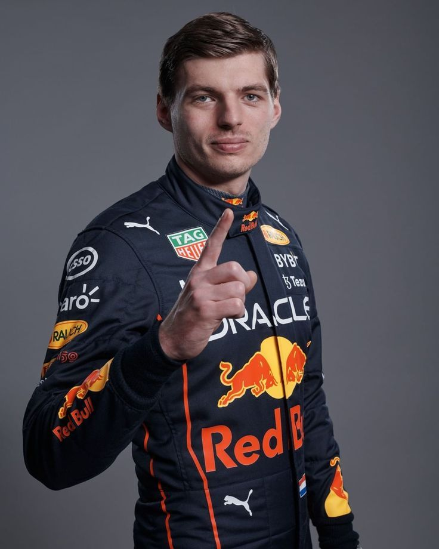
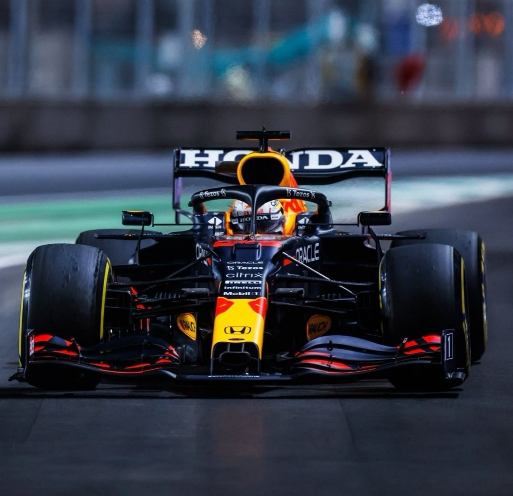
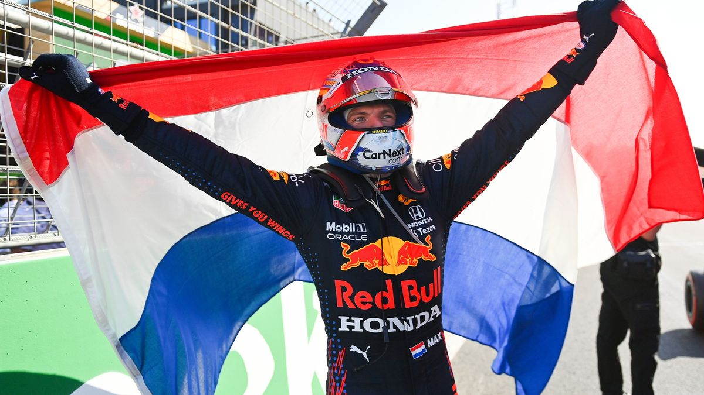

Max Verstappen
DRIVER PRESENTATION

Max Verstappen
Evolución Fenomenológica y Determinismo Competitivo de Max Verstappen
Max Emilian Verstappen inició su formación en el karting (2003) bajo una metodología de alto rendimiento supervisada por su entorno familiar, logrando un dominio absoluto en categorías internacionales antes de su transición a monoplazas. Su ascenso a la Fórmula 1 en 2015 con Scuderia Toro Rosso resultó estructuralmente disruptivo, al convertirse en el piloto más joven en debutar en la categoría con 17 años, lo que impulsó una reforma en los criterios de licencias de la FIA. Tras su promoción a Red Bull Racing en 2016, consolidó su estatus de élite al obtener la victoria en su Gran Premio de debut en España, estableciendo récords históricos de precocidad en triunfos y podios. El ciclo competitivo 2021 representó su consagración institucional, tras un duelo técnico intensivo que culminó con la obtención de su primer Campeonato Mundial de Pilotos. Al cierre de 2024, Verstappen ha alcanzado la cifra de cuatro títulos mundiales consecutivos y más de 60 victorias, posicionándose como el eje central de la nueva era estadística del automovilismo contemporáneo.
MOMENTOS DESTACADOS

Victoria Histórica en su Debut
España 2016: Con solo 18 años, Verstappen gana en su primera carrera con Red Bull, rompiendo todos los récords de precocidad.

Primer Título Mundial
Abu Dhabi 2021: El momento cumbre de una temporada intensa, coronándose campeón en una última vuelta legendaria.

Rey de Países Bajos
Zandvoort 2021: El regreso de la F1 a su casa bajo una presión inmensa, logrando una pole y victoria inolvidables ante su marea naranja.